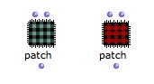
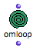
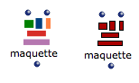
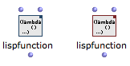

OpenMusic DocumentationHiérarchie de section : OM 6.6 User Manual > Visual Programming I > Boxes > Abstraction Boxes
OpenMusic DocumentationHiérarchie de section : OM 6.6 User Manual > Visual Programming I > Boxes > Abstraction Boxes
Navigation : page précédente | page suivante
Attention, votre navigateur ne supporte pas le javascript ou celui-ci à été désactivé. Certaines fonctionnalités de ce guide sont restreintes.
Abstraction Boxes (Intro)
Concept
Abstraction
Abstraction is a procedure that permits to abstract a program, that is, a process, a patch, into a box that can then be used into another program. In other words, an abstraction box represents a patch in another patch and acts as a function.
Abstraction is detailed in of the Advanced Programming section.
Abstraction Boxes
Patches
The main type of abstraction box is the Patch pox
There exist two type of patch boxes :
|

|
About Abstraction Boxes
OMLoop Boxes
OMLoops are particular abstractions that allow to design iterative processes. |

|
About the OMLoop Box
Maquettes
Maquettes are special programming editors with a temporal dimension. Like patch boxes, they can be eitheir global or internal. |

|
About Maquette Boxes
Lisp Functions
Lisp functions are abstractions defined textually in Lisp. Like patch boxes, they can be eitheir global (blue) or internal abstractions (red). |

|
About Lisp Function Boxes
Références :
Functional Abstraction
A functional abstraction is a program whose some elements can become variables, via connections to the outside environment. Hence, this program must have inputs or outputs that can be connected to external variable elements. The resulting functional abstraction can then be embedded into other programs to be used as a functional component.
Plan :
Navigation : page précédente | page suivante
A propos...(c) Ircam - Centre Pompidou